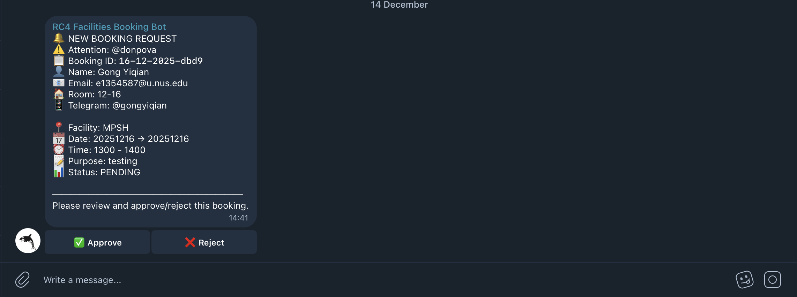
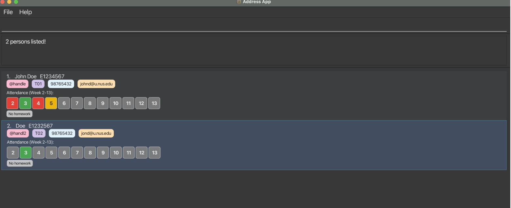
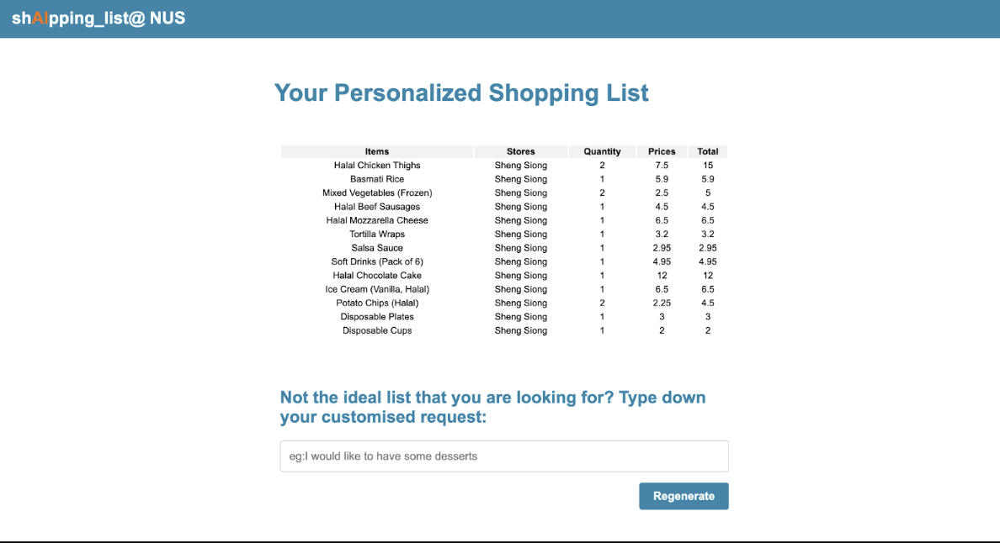

Study in NUS
- Year 2 Computer Science with 2nd Major in Management
- Relevant modules: Data Structures and Algorithms, Software Engineering, Introduction to AI and Machine Learning
- Co-curricular experience: Director of Student Engagement, NUS Students' Computing Club, Singapore
Selected Projects
Facilities Booking Telebot
Built a Telegram-based booking system with real-time availability checks, conflict detection, and approval notifications.

SoCTAssist
SoCTAssist is a desktop app designed specifically to help Teaching Assistants manage their students' information, homework, attendance, and consultation sessions more efficiently.

The Travel Parrot
Used GPT to label 10,000+ raw restaurant reviews and trained a Random Forest classifier with engineered NLP features to filter low-quality reviews.

shAIpping_List@NUS
Built a full-stack AI shopping list generator using GPT-4o, React, and PostgreSQL with locally curated items near NUS.

Product Experience
Product Specialist Intern • Fly Fairly
- Working on the end-to-end development of a high-impact Operational Reporting Suite using Next.js, managing the full product lifecycle from stakeholder discovery and scoping to build and validation.
- Engineering data reports for engineering, product, marketing and operation departments within the back office, managing the technical trade-off between real-time data freshness and query performance by defining precise metrics and data sources.
- Focusing on translating complex data sources into actionable metrics and filters to support daily executive decision-making.
Consulting Experience
Semi-Finalist (Top 10 Teams) • SGX-NUS Sustainability Case Competition
- Spearheaded product discovery to identify the "Complexity Wall" for Gen Z investors; architected a DLT-based fictionalisation strategy that reduced institutional entry barriers by 5,000x ($250k to $50).
- Designed an API-driven framework to normalise complex ESGenome institutional data into relatable retail impact metrics, bridging the technical disconnect for digital-native users.
Part Time Assistant • Bain & Company
- Selected to support a private equity due diligence assessing a family planning products brand as store visit temp.
- Conducted primary market research across multiple offline channels by developing a structured data summary framework using standardised Excel templates to capture and organise critical product attributes, including pricing, shelf placement, and availability